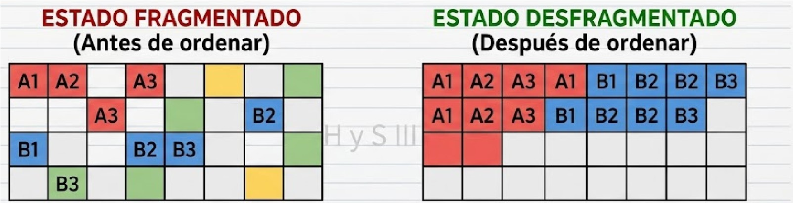

Una interfaz grafica es la forma visual que podemos interactuar con la computadora en vez de ver codigos binarios (0 y 1).
Hacen el diseño intuitivos para el usuario: cuadros de dialogo, el menu.
se refiere a ordenar archivos en el disco duro, permitiendo que trabaje mas rapido.

El panel de control es un conjunto de herramientas que ajustan la configuracion del equipo.
Para acceder a el podemos ingresar buscando en el buscador de windows (), al escribir "panel de control".
(en el menu de inicio)